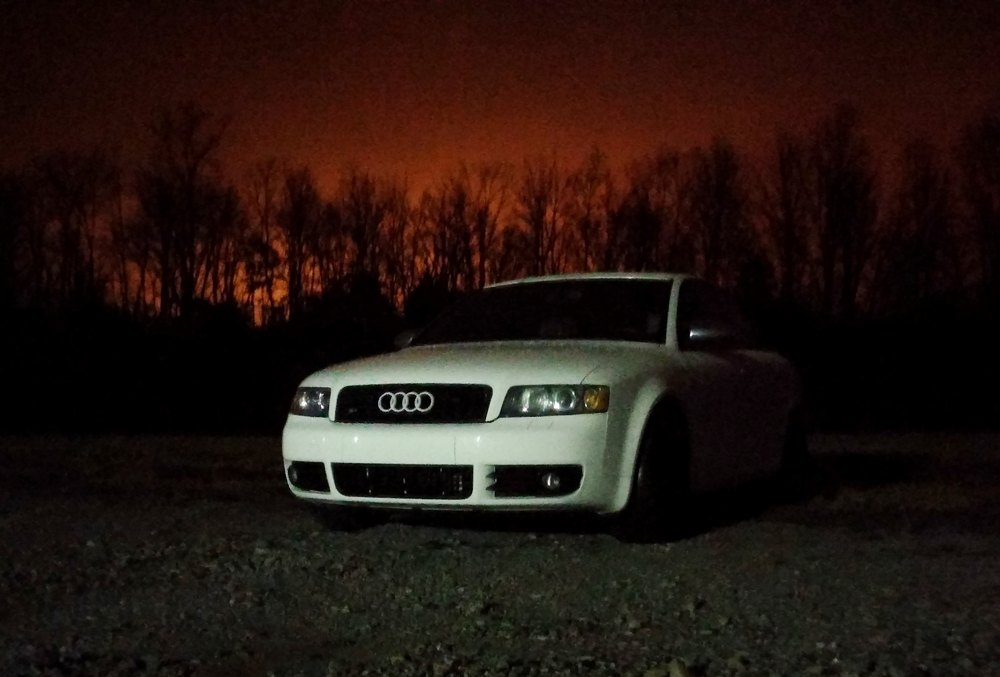
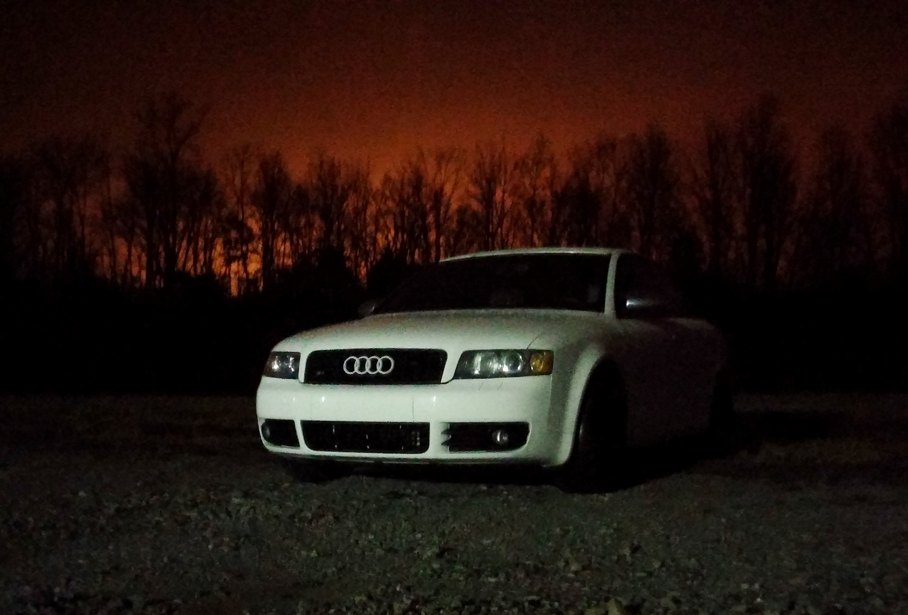

In my spare time:
Automotive AdventuresGrowing up, I was introduced to and learned a lot about cars and motors from my dad. That sparked an itch for tinkering has never stopped.
Now I am one of those guys that likes to DIY everything. Which, while saving lots of money, is always good for some interesting experiences.
My daily driver of the last 5 years is a 2005 Audi S4. In short, it is a love/hate relationship, but the "smiles per gallon" always wins.
 

The car is an AWD, german-engineered (a major pro or con, depending who you ask) 4.2L V8 motor outputting 340HP that is somehow shoehorned into a small sedan.
Beyond standard maintenance, to date my largest endeavor was when I pulled the motor out by myself to update the timing components which are (in)conveniently located on the rear of the engine...
My dad was around for a couple days, but overall it was a complete motor pull, timing rebuild, and reinstall, all in a week's time around Easter in 2015.
It was a great learning experience and definitely the most involved automotive repair I've completed.
Here are a few photos of the madness
Other recent work from the past year included refreshing the front Brakes, Suspension, and Steering!
As if the ongoing mechanical battle with one luxury German sport sedan wasn't enough, now that the kiddo is growing, we decided my wife needs a little more cargo room...
enter the S4 Avant! Same year, same motor; only difference is the rear end!
Woodworking & Crafts
I am slowly building up my workshop to be able to create furniture, gadgets, and gifts. I try to focus on building useful things for the house such as knife holders, storage, and doors to keep the little one out of harm's way. The most recent finished project was a birdfeeder for my Father-in-Law
Exercise & Sport
I am a regular in the gym, focusing on lifting alongside Crossfit for general fitness. I also enjoy mud runs and obstacle races - the obstacles much more than the running. For organized sports, I enjoy playing soccer, volleyball, hockey, and football. I've recently competed in a couple Crossfit competitions; I don't usually compete, but was convinced a couple times already this year. And it turns out I should compete more! I placed first in one and second in another (was tied for first but lost the tie-breaker!)